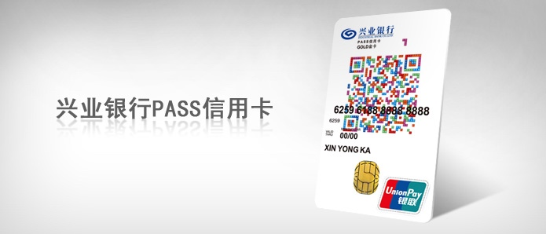
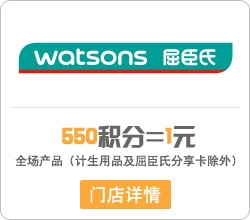

档案

银行名称：兴业银行
介绍卡种：兴业PASS卡（仅银联）
卡片级别：金卡、普卡
征信状况：首卡面签激活
信报状况：一个人民币账户（一卡一户）
年费情况：【首年年费】核卡成功即免首年年费；【次年年费】核卡成功后的一年内刷卡或取现满5次，不限金额，即免次年年费。
用卡
基本权益
网购计积分
2017年1月1日至2017年12月31日，客户使用兴业银行PASS信用卡当月满足任意一笔100元（含）以上刷卡交易，可尊享次月网上交易均计积分的优惠。
活动有效期内，当月本活动最高可获赠10000积分。本活动中的“月”为自然月。（例如：客户在5月1日到5月31日期间满足网购笔笔计积分条件，则在6月1日到6月30日期间所有网上交易将计送积分。）附卡交易计入主卡账户，当月主卡满足条件可享受本权益时，附卡亦可同时享受，所获积分计入主卡账户，主附卡当月获赠积分总计最高为10000分。若客户办理多张PASS信用卡主卡，所有卡当月获赠积分总和上限为10000分。
航意险最高200万
2017年1月1日至2017年12月31日（含）期间，您只需以名下兴业银行PASS信用卡金卡为您本人支付当次航班机票全额票款（指票面价格）或支付含该次航班机票票款的旅行团费的80%（含）以上，且以乘客身份乘坐对应航班，即可获得当次航班航空意外保险，最高保额200万元。特别保障，令您出行安全无忧！
至尊租车
2017年1月1日至2017年12月31日（含）期间，您以名下兴业银行PASS信用卡金卡/普卡可尊享至尊租车特惠礼遇：
指定车型，首次租车个人自驾短租首日日租金半价（每位客户限一次）。同时其余时候可享日租金8.8折优惠。指定车型包含：普通车型（别克凯越、雪铁龙爱丽舍或同档次车型）、舒适车型（本田雅阁、丰田凯美瑞或同档次车型）、高级商务车（别克GL8、本田奥德赛或同档次车型）。
成功结算的客户可获赠1张100元电子优惠券（每位客户年度仅限一张）。
除了标准PASS卡、桃花卡，兴业PASS卡还与两款游戏联合发布的联名卡，废话不说，无图无真相：
上述两张兴业PASS联名卡，除了上述权益，还有相应的游戏权益赠送。
特别测评：积分的累计与使用
前面其实说过了关于兴业PASS卡的积分累积的情况，比如网购积分多倍什么的，其实兴业银行信用卡整体而言，积分的累积是有规定的：
签账消费每满人民币1元积1分，每满1美元积6.5分。预借现金每满人民币1元积1分，每满1美元积6.5分。附属卡所获积分计入主卡账户。单笔积分交易获取上限为10万分（含各类多倍积分活动和普通交易积分）。全币种国际信用卡通过国际卡组织VISA\MasterCard转接的外币一般签账消费或预借现金均以人民币记账，入账后满1元人民币可获得积分1分（溢缴款取现不获得积分）。
而且，兴业银行信用卡持卡人生日当天消费也有积分翻倍奖励：
兴业银行信用卡持卡人在其生日当天持本人名下的兴业银行信用卡（除标准白金信用卡）进行的交易（不计积分交易及持淘宝网联名信用卡在淘宝网通过快捷支付方式进行的交易除外），可获二倍积分（一般积分累计规则基础上额外获赠一倍积分）。附属卡持卡人在其生日当天同样享受二倍积分（一般积分累计规则基础上额外获赠一倍积分），获得的积分计入主卡账户。
这基本上就是兴业积分的累积条件了。而兴业银行信用卡积分在所持卡片有效期内是完全有效的，在卡片有效期内并不会清零。
2010年4月1日（含）起新核发的信用卡主卡积分有效期在信用卡主卡卡片有效期内有效；卡片到期持卡人续卡后，原卡片积分可保留到该卡片到期日后的3个自然月， 3个自然月后原卡片未使用积分将自动清零；同时，卡片到期前6个自然月内至积分清零期间不可进行卡片间的积分转移合并。到期未续卡，卡片到期后积分自动失效；信用卡账户关闭或注销后，剩余积分将被清除，且不可再恢复。
说完了积分累计，对于兴业银行的积分如何花才是更多卡友关注的，以下是兴业银行信用卡可以进行“花积分”的途径：
花积分，就兑了
活动内容：活动期间，持卡人使用兴业银行信用卡积分每兑换此页面任一件积分礼品即可获赠本页所列对应赠品一件，赠品数量有限，赠完即止。
点评：这个活动从16年新上之后，基本上每到节假日都会举办一期。不过兑换的礼品所需积分有些不菲啊……
积分捐赠
爱“兴”积分——西部绿化行动为兴业银行信用卡中心联合中国绿化基金会，着眼于“绿色家园，你我共建”这一主题推出的公益活动，持卡客户所捐赠的积分每满7500分，即可为西部地区的贫困家庭捐赠一棵枸杞树，帮助他们种植生态经济林，以应对气候变化所带来的生存挑战。
点评：积分实在没有用武之地的时候，还可以捐献，用于公益。
积分当钱花
活动时间：2017年3月6日—2018年3月5日
活动内容：活动期间，持兴业银行信用卡至屈臣氏、万宁指定门店，即可按550积分=1元的比例进行消费。

点评：这是17年新上的活动，550积分可兑指定店铺抵现消费，目前只有屈臣氏和万宁加入，不过未来兴业银行也不会让持卡人失望，加入更多的合作商户，发挥积分更大的功用。
非航空联名卡兑换里程
很多银行的积分兑换规则写明，非航空联名卡是不能用积分兑换里程的。而兴业银行的非航空联名卡积分（也就是普通信用卡积分）是可以兑换里程，这对出行需求一般的持卡人来说是一个好消息。当然这个兴业PASS卡可以用，其他非航空联名卡也可以使用。
国航
每25信用卡积分兑换1公里“国航知音”里程，每500里程（即12,500信用卡积分）为1兑换单位。国航知音会员在两个日历年内，累计飞行4个航段（国航实际承运的航班），或飞行里程累计达到2万公里即具备首次兑奖资格。
南航
每25信用卡积分兑换1“南航明珠俱乐部”里程，每500里程（即12,500信用卡积分）为1兑换单位。
东航
每25信用卡积分兑换1点“东方万里行”积分，每500“东方万里行”积分（即12,500信用卡积分）为1兑换单位。
海航
每25信用卡积分兑换1“金鹏”里程，每500里程（即12,500信用卡积分）为1兑换单位。
厦航
每26信用卡积分兑换1厦航奖励积分，每1厦航奖励积分（即26信用卡积分）为一个兑换单位。
特别的：白金卡可用积分兑换年费
兴业银行的白金卡可以用积分来兑换年费，具体参见：http://creditcard.cib.com.cn/integral/conversion/table.html
其实对于PASS卡来说，兴业银行的积分兑换没有任何其他特殊的用途，基本都是兴业银行的积分活动和积分兑换。而且积分活动和积分兑换又少的可怜，真心希望兴业银行能在未来对积分的使用出点更好的玩法，让持卡人的信用卡积分不要躺在账户里睡大觉。
卡片小结
优点：
- 兴业PASS卡上支付有积分。
- 卡面漂亮，很适合颜值控选择。
- 积分积累容易，积分活动近年逐步增多。
缺点：
- 卡片本身权益较少，适合入门卡友选择。
- 积分活动仍显不足，需要加大积分活动，吸引持卡者刷卡。